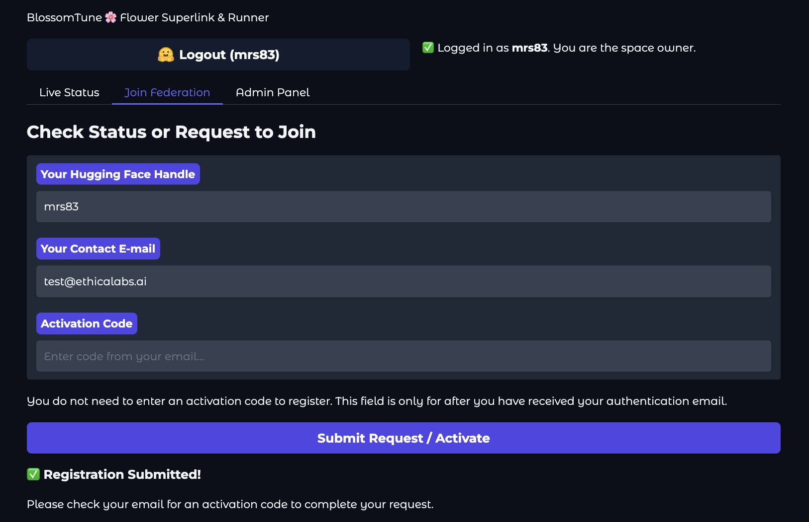
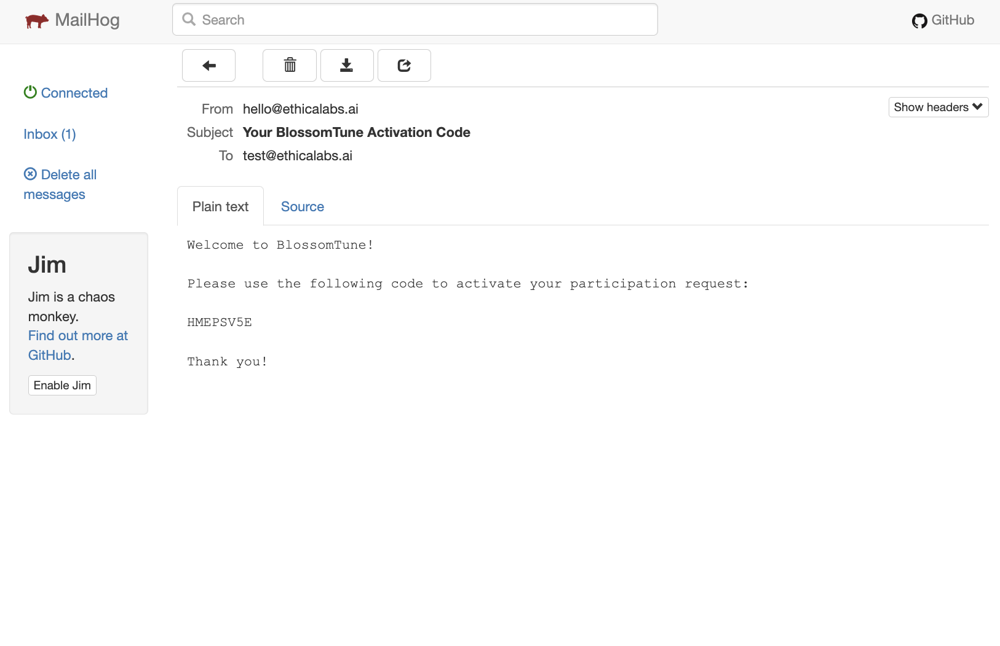
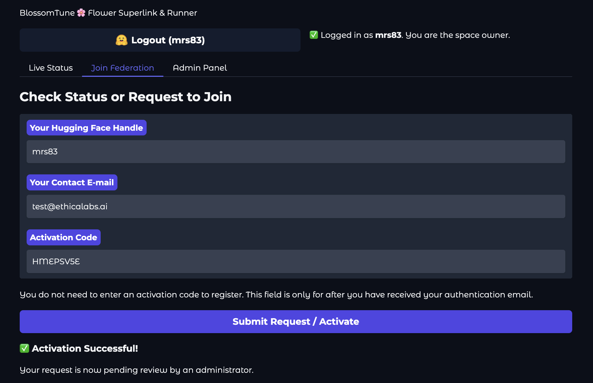
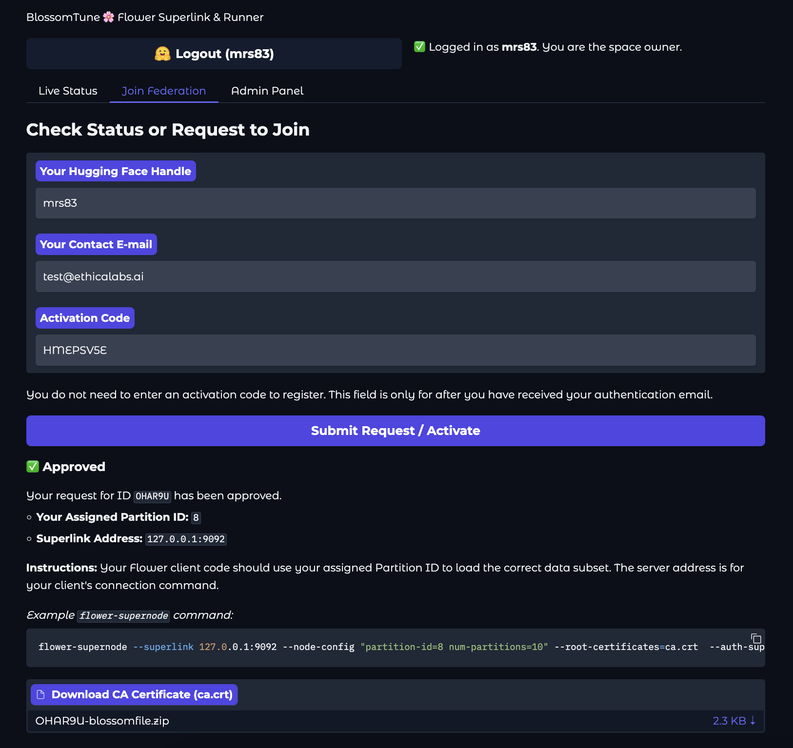

User Guide: For Participants¶
This guide explains how to join a federated learning experiment hosted by the BlossomTune Orchestrator.
1. Request to Join¶
- Navigate to the orchestrator's Gradio URL.
- Go to the "Join Federation" tab.
- If the app is hosted on Hugging Face Spaces, you must log in with your Hugging Face account. Your HF handle will be used as your identifier.
- If running locally, enter a unique Hugging Face Handle (or username).
- Enter your Contact E-mail address. This is where your activation code will be sent.
- Leave the Activation Code field blank for the first request.
- Click "Submit Request / Activate".
You should see a confirmation message: "✅ Registration Submitted! Please check your email for an activation code..."


2. Activate Your Request¶
- Check your email for a message with the subject "Your BlossomTune Activation Code". (If running locally, check the MailHog UI at
http://localhost:8025). - Copy the activation code from the email.
- Return to the "Join Federation" tab.
- Your HF Handle and E-mail should still be filled in.
- Enter the Activation Code into its field.
- Click "Submit Request / Activate" again.
You should see a new message: "✅ Activation Successful! Your request is now pending review by an administrator."

3. Check Approval Status¶
After an administrator has reviewed your request, you can check your status.
- Return to the "Join Federation" tab.
- Ensure you are logged in (or your HF Handle is entered).
- Enter your E-mail and Activation Code.
- Click "Submit Request / Activate".
You will see one of three statuses:
- Pending: "⏳ Pending. Your request has been activated and is awaiting administrator review."
- Denied: "❌ Denied. Your request for ID
...has been denied." - Approved: "✅ Approved. Your request for ID
...has been approved."
4. Download Credentials (If Approved)¶
If your request is approved, the status message will include your connection details (like your partition_id) and a download button will appear.

- Click the download button (e.g.,
PARTICIPANT-ID-blossomfile.zip). - This
Blossomfileis a.ziparchive containing everything you need to connect:blossom.json: Configuration file with yourpartition-id.ca.crt: The federation's public root TLS certificate.auth.key: Your private authentication key.auth.pub: Your public authentication key.
You can now use these files with your Flower SuperNode client to connect to the federation, as shown in the example command in the UI.